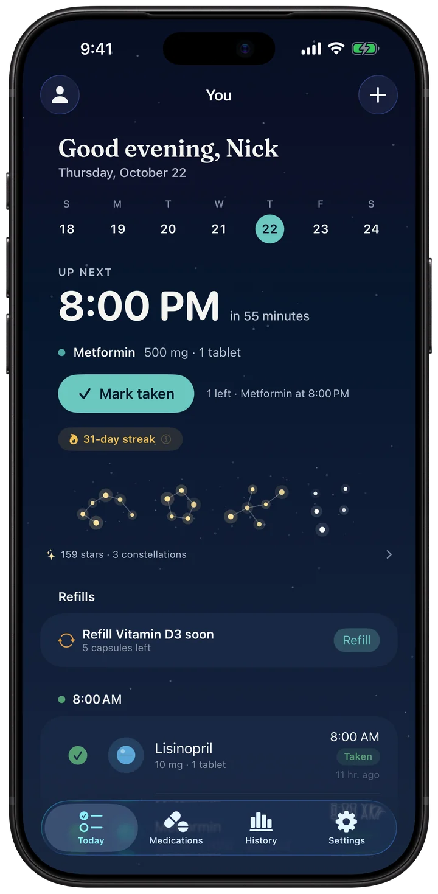
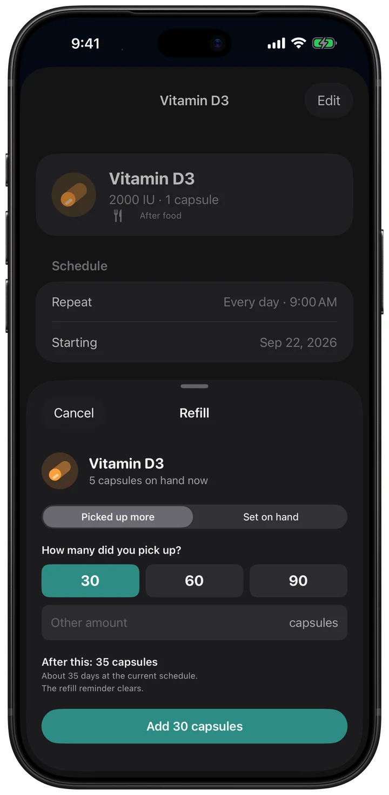
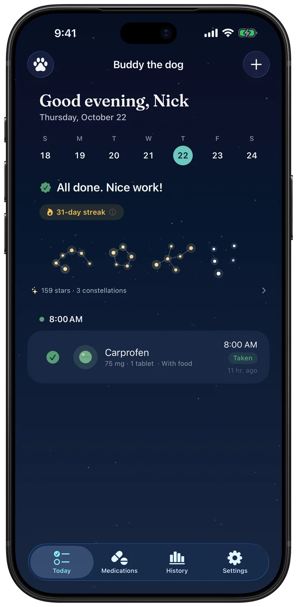
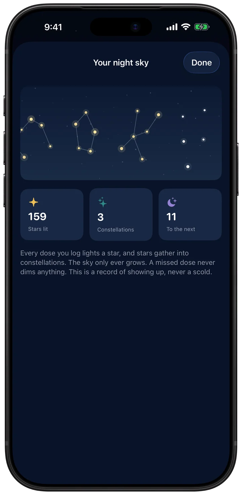
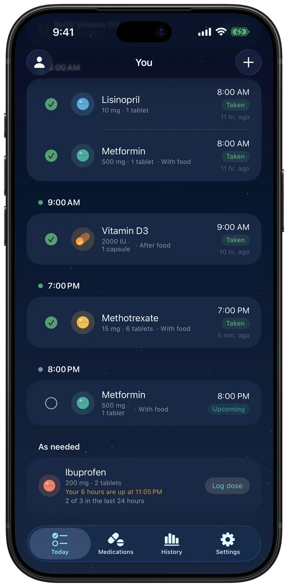
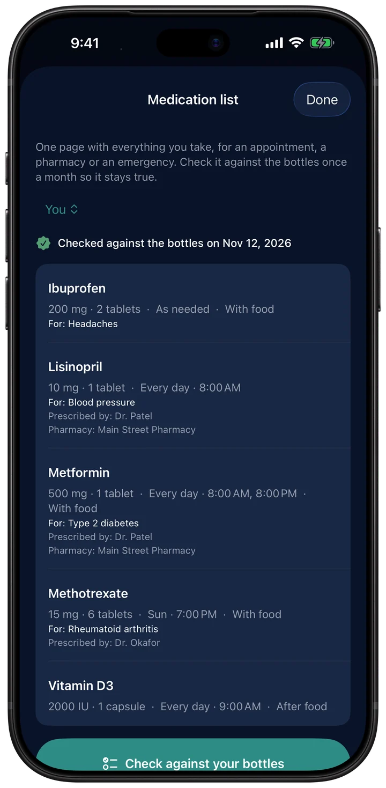
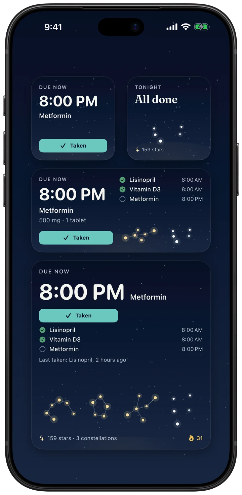

A follow-up at 30 minutes, another at two hours if you ask. Then quiet.
Free. No account. No ads.

DoseKeep is a medication reminder for iPhone. If you forget a dose, it reminds you again, and then it goes quiet.
People, kids and pets go on one list, with no cap on medications. It tells you a week before a refill runs out, and every dose you log lights a star in a night sky. Everything stays on your iPhone. There is no account and no cloud.
As-needed medicines are counted. You set your own limit for 24 hours, and DoseKeep keeps count, says when your hours are up, and asks once before an early dose. It never stops you.

Knows when you'll run out
A note a week before, and again two days before.

One list for the whole house
Parents, kids and pets. No cap on medications.

Every dose lights a star
Stars gather into constellations. A missed dose never dims anything.

As-needed, counted
Your own limit for 24 hours. It keeps count and never stops you.

A medication list that stays true
Check it against the bottles each month, then share or print. A Plus extra.

Your sky, on your Home Screen
Today's doses in every widget size and on the Lock Screen.
The details
Price
Free. Plus is optional: $9.99 once (US price). No subscription. Plus adds more than two profiles, the medication list, logging from Control Center, the Action button, Siri or an NFC sticker on the bottle, history beyond 90 days, and three more night skies.
Ads
None
Account
None. No sign-up.
Privacy label
Usage Data (how the Plus offer is used), not linked to you
Checked against the App Store listing on November 18, 2026 (version 2.17.1).
Support
Found a bug, or want something added? Email me at minieriapps+dosekeep@gmail.com. I make DoseKeep on my own and read every message. Give me a couple of days to reply.
DoseKeep helps you remember your medications. It is not a medical device and does not give medical advice. It never gives advice about a specific medication. Always follow your doctor's and pharmacist's instructions.
Reminders
Reminders depend on your iPhone's notification settings, Focus modes, battery and clock. They can arrive late or not at all. Do not rely on the app as your only safeguard for a medication where a missed or doubled dose is dangerous.
One-time purchases
When the app says a purchase is yours "forever", "for good" or for a "lifetime", it means this: you pay once, there are no renewals, and what you bought stays unlocked for as long as the app is available and supported on your device. It is tied to your Apple Account, so you can restore it on your other devices.
"Forever" and "lifetime" refer to the life of the app, not to your lifetime or to a fixed number of years. Features may change, and the app may stop being updated or be withdrawn from the App Store. If that happens, the version on your device may keep working, but it cannot be promised to run on future versions of iOS or on future devices.
A one-time purchase covers the features described when you bought it. It is never turned into a subscription.
Things described as free
Where the app says something is free "forever", it means there is no plan to charge for it, and nothing you already rely on will be moved behind a payment without the app saying so clearly first. It is not a promise that the app will always exist.
These terms may change, and the date above shows the latest version. Nothing here limits the rights you have under the consumer law of the place where you live.
Privacy Policy
Last updated: November 16, 2026
DoseKeep is designed to be private by default. This policy explains what that means in plain language.
The short version
Everything you enter (your medications, schedules, and dose history) is stored only on your iPhone and is never sent anywhere. There is no account and no login. The one thing the app sends is an anonymous count of how often the Plus offer is seen and chosen.
What we collect
An anonymous count of how the Plus offer is used: that it was shown, tapped or bought, from which screen, the app version and the language. It carries no identifier, so it cannot be tied to you or your phone, and nothing about your medications is in it. It goes to TelemetryDeck, a privacy-focused analytics service, and you can switch it off in Settings, under Privacy. DoseKeep has no advertising, no trackers and no third-party SDKs, and no way to see your medications.
Where your data lives
All of your information is stored locally on your device using Apple's on-device database (SwiftData). It is included in your device's normal encrypted backups (iCloud Backup or a local Finder backup) if you have those enabled. That is handled entirely by Apple under Apple's Privacy Policy, not by us.
Notifications
DoseKeep uses local notifications to remind you to take your medications. These are scheduled and delivered entirely on your device by iOS. They are never sent through any server.
Exporting your data
You can export your medication history as a PDF or CSV file. When you choose to export, the file is created on your device and shared only through the destinations you pick in the iOS share sheet (for example, Mail, Messages, or Files). DoseKeep does not receive a copy of anything you export.
Children's privacy
DoseKeep does not collect any data from anyone, including children.
Changes to this policy
If this policy ever changes, the updated version will be posted here with a new "Last updated" date.